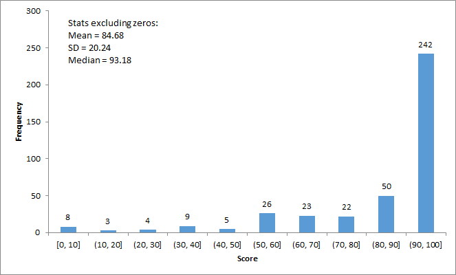

We have uploaded all test cases to ZINC and regraded your latest submissions.
For individual test case result and score, please find the latest pa3 grading report on ZINC. The test case total score is 52.8.
Please also check your "PA3 final score (scaled to 100 max)" HERE. It shows you the total test case score (scaled to 100 max) with all penalty applied. (e.g. late submission penalty). The formula is as follows:
"PA3 final score" = "Test case total" / 52.8 * 100 + "Penalty"
We will perform plagiarism checking at a later time and marks will be adjusted for those who are caught.
Statistics (for submitted works only, excluding zeros):

If you want to appeal your grade: you MUST read this whole page and follow all procedures correctly. Your appeal will be dropped otherwise.
Marking scheme
As mentioned in the grading scheme on our PA3 webpage, before the deadline we had 22 test cases given to you. Now we have added 22 more. Each test case is run two times.
Each of the test cases run without memory leak checking (i.e., #1 - #44 on ZINC) is worth 1 mark. The second run of each test case with memory leak checking (i.e., #45 - #88 on ZINC) is worth 0.2 mark. The maximum score you can get on ZINC will therefore be 44*(1+0.2) = 52.8.
While all given test cases are also included in the final testing. Their test case #s may be different.
There is no partial credit.
Your program is given at most 10 seconds to run for each test case.
Memory leak checking (along with some other additional runtime error checkings) is only enabled in test case #45 - #88 using the -fsanitize=address,leak,undefined compilation flag as mentioned in the assignment description page. You must get no errors in those cases to get marks for them.
Trying the Test Cases
You can see all the test case results on ZINC in the latest grading report. If you want to try the test case on your own computer, you may do the following.
Download and extract the files in this test package
Add them to VSCode or whatever IDE you use.
Download your latest submission from ZINC.
Extract your submitted files and add them to the same directory/project.
Compile and run the test cases.
Check the output and read the code of each test case to understand what is being tested. You may find the expected output here (or the ZINC grading report).
Sample solution
A sample solution can be downloaded HERE for your reference.
Please understand that it is not feasible for us (or any single person) to review all the assignment code of everyone to point out where all the subtle bugs are.
The sample solution is useful for you to find out the potential problems in your program yourself by comparing your solution with ours.
Notes and appeal procedure
Runtime errors, crashes, and inconsistent output due to incorrect memory access / memory allocation / memory deallocation / missing variable initialization / missing return values / out-of-bound array access / etc. may not occur all the time on all machines. However, even you may not encounter the error/crash when you test your program, if your program crashes during any of our testing on ZINC, the corresponding test cases will be considered as failed and will receive 0 marks as your code is indeed faulty.
If you somehow get a correct output on your own computer but you get a different output on ZINC, it is likely your code is faulty. Refer to the previous comments for possible causes. Verify your code to make sure they aren't faulty and won't produce any runtime error before you appeal those cases. Compare your solution with the sample solution yourself if needed.
We can run the test cases again for you (after you have verified them yourself), but all grading shall be done objectively in an automatic and consistent way on the very same machine (the ZINC grading machine, not any other machine including yours or ours). However, if your program crashes or gives unreliable results, it is guaranteed that the problem is somewhere in your code, and marks will not be given. For grading, only the result of your program on the ZINC machine matters.
It is possible that you get a lower mark as we rerun the test cases for you and found additional crashes/mistakes. We rerun all test cases (not just the ones you want to rerun) for all appeals. So proceed carefully at your own risk, not just blindly appeal your grade anyway.
It is mentioned in the assignment instruction that "It is required that your submissions can be compiled and run successfully in our online autograder ZINC. If we cannot even compile your work, it won't be graded. Therefore, for parts that you cannot finish, just put in dummy implementation so that your whole program can be compiled for ZINC to grade the other parts that you have done."
For compilation errors, you get 0 mark. To appeal, you should find out how to fix the compilation errors yourself, and then clearly tell us how in the email. If the fix is simple, we will help you fix it according to your instructions then regrade it with a penalty. The fix should fix compilation errors only and must not change the logic of your program.
Please understand that, for fairness, we usually do NOT allow any student to change their submitted code. On very rare circumstances, say, adding a character will make you get back at least 50 marks, then we may consider it. Even then, a major penalty will apply to the regraded result.
If you are certain that there is a grading mistake after reading this whole page, reading the assignment description/FAQ, and reading and trying the test cases yourself, email to compPAappeal@gmail.com with the following information. Appeals with incomplete information will not be processed.
Email subject must be COMP2011 Fall 2021 PA3 Appeal
Email body contains all of the following:
Your full name as shown on your student ID card
Your HKUST itsc username
Your student ID number
Test cases for which you want to appeal
Justification and any information that is helpful for your appeal case
Do not attach any .exe/executable/.html file in the email as they will be blocked by the email server.
Appeal deadline is Dec 12th (Sunday) 23:59pm.
No late appeals will be processed.
Due to the large number of students that we have, please allow up to 72 hours for your appeal email to be processed and replied. If you do not receive a reply in 72 hours, please re-send your email.
Finalized scores will only be uploaded to Canvas after all appeals are processed.